カルテ
- 患者ID
- —
- 氏名
- —
- 既往・通院
- —
高難易度・お仕事シミュレーション
～ 病院受付シミュレーション ～
押し寄せる患者。保険証の確認、カルテ探し、処方箋の照合、会計処理—— 待たせればクレーム、間違えれば減点。このブラック職場を捌ききり、クビを回避せよ。
受付カウンターの向こうには、まだ 32 人。
診 療 録 ／ MEDICAL RECORD
No. 4334400
受付・入力・カルテ探索・監査・会計。すべてを同時進行で、正確に、そして速く。 以下の症状に、心当たりのある方へ。
新規・再診が次々と来院し、待合室に列を作る。マイナ保険証は一瞬、紙の保険証は手入力。判断と処理の速さが命。
膨大な棚から患者IDのバインダーを探し出せ。社保・国保・後期高齢者——分類を見極め、正しい一冊を抜き取る。
カルテ・処方箋・保険証を突き合わせ、処方ミスを見抜く。確認できたら押印。見落としは許されない。
請求額をテンキーで入力。既往歴に応じて次回予約を設定。すべて正しければ患者は退店、スコア加算。
1日の働きをスコア化して6段階で評定。Sランクは金色の豪華演出。ハイスコアとニューレコードを狙え。
患者を満足させられなければ、リスクは上がり続ける。設備投資で満足度を上げろ——ただし“ニセDX”の罠に注意。
要 経 過 観 察
Game Loop
受付から会計まで、途切れない一本のライン。1工程が詰まれば、全部が渋滞する。
来院受付・保険証確認
紙の保険証を手入力
棚から該当カルテを発見
3点照合・押印
金額計算・次回予約
ライン稼働中
Try It
本編の「監査」では、患者1人ごとにカルテ・処方箋・保険証の3枚が回ってきます。 あなたの仕事は、この3枚に食い違いがないかを見つけること。 問題なければ押印して会計へ、食い違いがあれば差し戻します。下はその簡略版です。
3枚の氏名を見比べる。1枚でも違う名前なら、別人の書類が混ざっている。
カルテの通院理由と処方薬の適応を見比べる。噛み合っていなければ処方ミス。
どちらも問題なければ押印。1つでも引っかかれば差し戻し。
この3枚に、食い違いはありますか？
カルテ
処方箋
保険証
氏名3枚と、通院理由・適応の噛み合いを確認してください。
※ 薬剤名・適応はすべて架空のものです。実在の医薬品とは関係ありません。
Beyond the Desk
このゲームの本体は、1日ごとの選択です。カレンダーが進み、自宅の画面で「今日は何をするか」を選ぶ。 出勤して稼ぐか、休むか、増やしにいくか。その積み重ねが、契約満了までの残り日数を削っていきます。
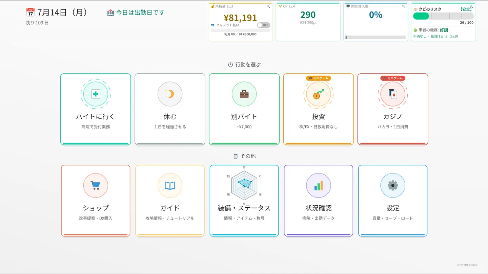
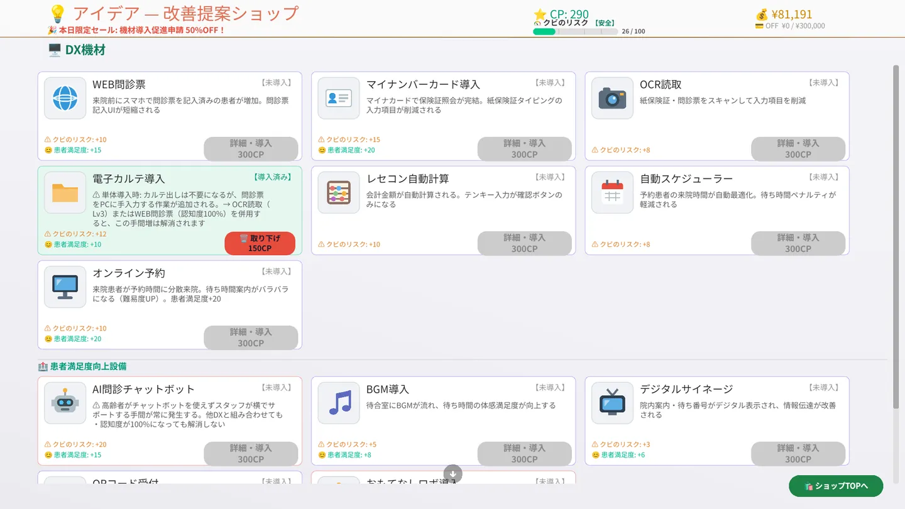
電子カルテ、OCR読取、マイナ保険証、自動スケジューラー。導入すれば受付業務そのものが楽になります。 ただし導入直後は患者が慣れず、クビのリスクが上がる。しかも中には、見かけ倒しで効果の伸びない機材も紛れています。
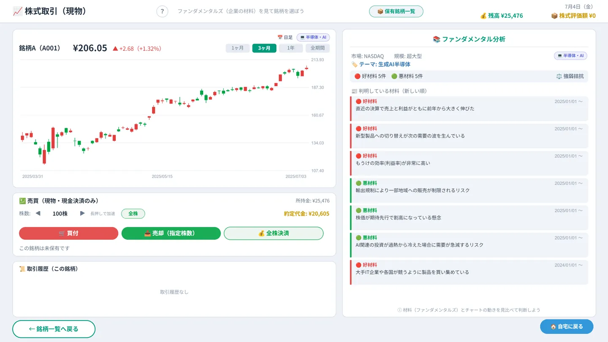
現物株は、チャートではなく企業の材料で選びます。好材料と悪材料を読み比べ、噛み合う銘柄を探す。 FXはリアルタイムに動く相場を相手取ります。日数を消費しないぶん、深追いも自由です。
2択のバカラと、ディーラーとの読み合いになるポーカー。カジノに行けば丸1日が消えます。 負けた翌朝、残り日数だけが減っている——その手触りごと味わってください。
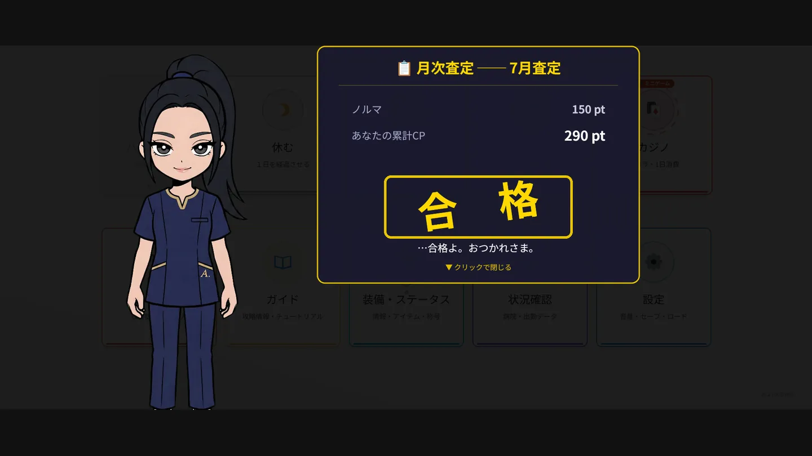
月末ごとにCPのノルマが課され、届かなければ査定不合格。 連続欠勤、クビのリスク、クレジットの使いすぎ。行き着く先はそれぞれ別のエンディングです。
Achievements
実績27種・エンディング12種・称号9種。エンディング系はネタバレを避けて伏せてあります。 スクロールすると、いくつかが解除されます。
※ Steam実績として登録されるのは、このうち一部です。
Screenshots
実際のゲーム画面です。クリックで拡大します。
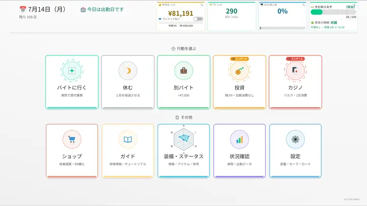
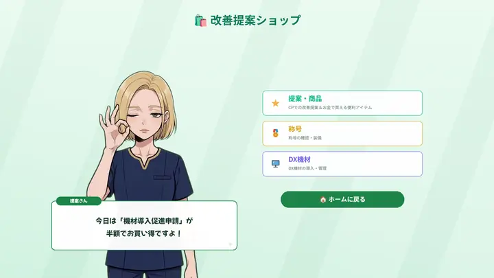
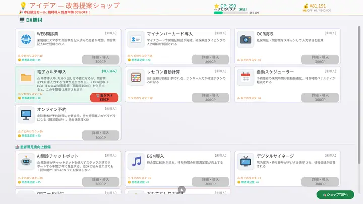
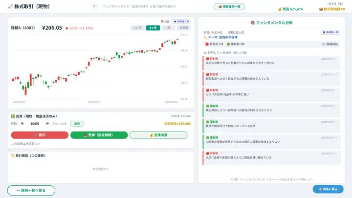
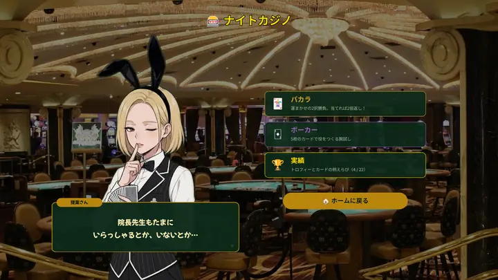
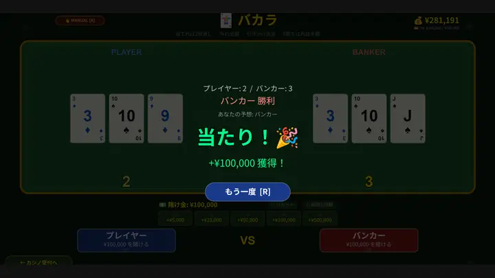
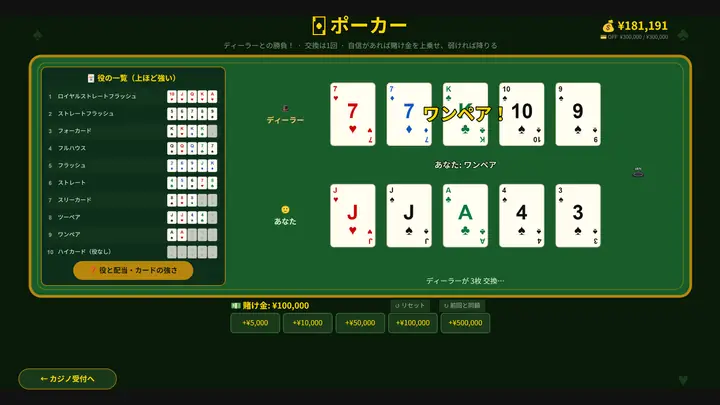
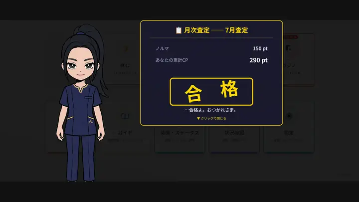
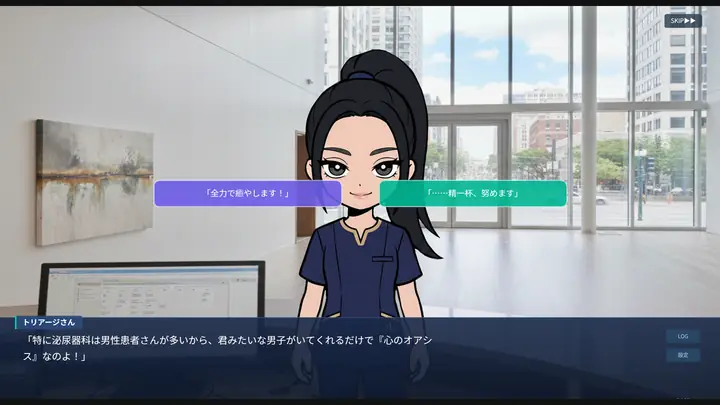